The feel
Painterly 2D looks like an illustration that has started to move, because the painting is the game's own art: Rayman Origins' lead story writer counts the artists' hand-drawn artwork, used directly in the game, as one reason it looks so fresh and different.1 Child of Light's creative director, Patrick Plourde, first pictured a classic JRPG that used Yoshitaka Amano's artwork directly in the game.2 Ori's team took their cue from hand-drawn films such as Princess Mononoke, and one of its lead artists, Johannes Figlhuber, wanted the player to feel like a visitor in a strange and beautiful world.3
It works when the painting stays a game. Michel Ancel saw that 2D let his team build a universe with the quality of the best animated features, but interactive,1 and the artists of Ori and the Will of the Wisps guide the eye with leading lines and contrast, so that a scene feels natural and of a piece yet still reads at a glance.4
- hand-painted
- luminous
- layered
- melancholy
- storybook
- dreamlike
Where it comes from
Painters have long used colour to suggest distance: Leonardo da Vinci named the method aerial perspective, and after Flemish painters rediscovered it in the 15th century it became a standard part of European painting.5 The style's storybook side goes back to the Golden Age of Illustration, from about 1900 to the First World War, when Arthur Rackham, John Bauer, Edmund Dulac and Kay Nielsen illustrated fairy tales; Child of Light later paid homage to them.6,2 In games, Michel Ancel's team built the UbiArt Framework so artists could work without thinking about polygons, textures or sizes, and its first game, Rayman Origins (2011), took Rayman back to the artistic side of his 1995 debut.1,7 Child of Light (2014) used the same engine,2 Ori and the Blind Forest (2015) had over 7,000 hand-painted graphics,8,3 Hollow Knight (2017) was built from Ari Gibson's sketches, photographed and cleaned up for the engine,9 and Gris (2018) from the Catalan artist Conrad Roset's pen lines and watercolour.10
Core elements
Hand-painted art used directly
The hand-made art goes straight into the game. Ori and the Blind Forest has over 7,000 hand-painted graphics,3 Hollow Knight's art and animation were drawn in Photoshop and saved as simple PNGs,11 and the UbiArt Framework behind Rayman Origins turns any artwork that can be scanned, photographed or digitized into animated images.1
Depth from painted layers
Scenes are flat painted layers set at different depths: Hollow Knight builds its levels from 2D assets layered in a 3D environment.11 Painters have a method for making layers like these read as distance, aerial perspective: further back, things turn lighter, softer at the edges and lower in contrast, and dark shapes drift towards blue.5
Hand-painted lighting
Light belongs to the painting. Ori's artists could give every graphic its own lighting, colour and movement,3 and the sequel's artists painted light direction maps for every asset by hand.4 Hollow Knight skipped complex 3D lighting and made its light from soft transparent shapes.11
Visible brushwork
Painterly work shows its brushstrokes: the paint goes on loosely, in any painting medium.12 Gris mimics the way watercolour pools on paper, with colour often falling outside the lines of a face or a hill,13 in a world of pen lines and splashes of watercolour,10 and Child of Light's hand-drawn art was given a watercolour finish.6
Palette shifts across the world
The palette tells the player where they are. Gris grew from Conrad Roset's idea of a game that evolves with its colours,14 and in Ori and the Will of the Wisps each direction the player heads in brings a different palette and feel.4
Small hero in a large landscape
The hero stays small and the world takes the spotlight. Ori is kept very small on screen, both so the player can see further ahead and to show a small character in a huge, intimidating world.3 Nomada says the scenery of Gris sometimes takes the spotlight from its heroine,13 and Ari Gibson says Hollow Knight's visual goal, 'Keep it simple', was probably integral to building so large a world in two years.9
How to do it
Set the resolution first
Agree the resolution and memory budget first. Rayman Origins ran its hand-drawn art in 1080p at 60 frames per second,1 Child of Light ran at 1080p on PS4 and 720p on PS3, both at 60 fps,2 and Ori went from 720p to 1080p when it moved to Xbox One, with huge characters such as Kuro needing a 1024 by 1024 sprite to hold up.8 Plan the memory too: Gris's team had to work a lot on memory and on how the game played all its hand-drawn frames.14
Paint a kit of parts
Paint parts and build scenes from them. For Rayman Origins, artists made patterns, like samples, that were used to model levels quickly, a forest for example.7 Ori's artists painted over 90 unique trees and many leaves and branches, combined them, and could give each piece its own lighting, colour and movement settings.3 Ari Gibson photographed his Hollow Knight drawings with a phone, cleaned them up and kept adding pieces into the world until it felt full.9
Scroll layers at different speeds
Set the painted layers at different depths, as Hollow Knight does by layering 2D assets in a 3D environment.11 Give each layer its own scroll-speed multiplier, with a value for each axis: 1 moves with the camera, lower values sit further back, 0 stands still and values above 1 bring a layer closer.15 A five-layer example slows only the sideways scroll and leaves the vertical at 1: 0.7 for a forest, 0.5 for hills, 0.3 and 0.2 for two cloud layers and 0.1 for the sky.15
Add haze to far layers
Fade each far layer a little more for each step back, following the aerial perspective above: lighter, lower in contrast, darks bluer.5 A small sprite shader can do it: mix each pixel's colour towards a pale haze colour by an amount you raise for each layer further back, so the air can be changed without repainting.16,17 Mix only the red, green and blue channels and leave alpha as it is: the mix works channel by channel, so mixing alpha with an opaque haze would also fill the sprite's transparent areas with haze.17,18 Make the haze heavier at the foot of a distant hill than at its top, because the air is denser lower down.5
Paint the light by hand
For Ori and the Will of the Wisps, Moon Studios painted six light expressions (top, bottom, left, right, back and front) for each of the game's 7,000 or so assets and combined them into a pseudo-normal map that reacts to dynamic lights.4 To let painted sprites catch 2D lights, give each one a normal map for surface detail, or a mask map that controls which areas receive light, for highlights, rim light and shadow.19 On a small budget, do what Hollow Knight did: a few simple sprite shaders, with light made from soft transparent shapes.11
Add a paper texture
Gris's team tried pencil strokes, scanned paper textures and scanned watercolour stains, and worked a lot with shaders to make it look as close as possible to traditional hand-drawn animation,10 shaders meant to give the same result in the game that the artists usually got in a poster.14 Lay a paper scan over the scene with a multiply blend, so the white of the paper leaves the paint as it is and only the grain and stains darken it.20 Child of Light's art director reproduced Arthur Rackham's method digitally: an outline, lightly blocked-in shapes, lines in pen and ink, then wash after wash until the tints turn translucent.6
Choose an animation method
Rayman Origins' engine cut scanned or painted art into pieces and gave it a skeleton of bones, so the animator posed it and the image deformed to match.1 To work that way, paint each part of a character on its own layer in a neutral pose and import the layers as separate sprites, ready to be rigged with bones and weighted.21 Hollow Knight's animation is traditional, drawn by hand instead.11
Cheat sheet
- Big sprites
- 1024 x 1024 for a giant such as Ori's Kuro8
- Parallax
- Scroll speed 0.1 sky, 0.5 hills, 0.7 forest; 1 moves with the camera15
- Aerial perspective
- Further back: lighter, softer edges, less contrast, darks bluer5
- Painted light
- 6 direction maps per asset, merged into a pseudo-normal map4
- Cheap light
- Light from soft transparent shapes; a handful of simple sprite shaders11
- Source files
- Layered file, one body part per layer, neutral pose21
- Texture
- Scanned paper and watercolour stains, through shaders10
Do
- Play the level as black-and-white silhouettes before you paint it. Ori began as rough block-outs of black-and-white silhouettes,3 and Thomas Mahler spent months tuning its controls with a programmer so the game would be fun even in a simple greyboxed level.8
- Keep the hero graphic and simple. Ari Gibson's advice: a little cloak hides the arms, and you will draw your protagonist a thousand times over.22
- Keep the detail sharp where the eye goes. Will of the Wisps on Switch lets some low-res art sit in the corners, but the team makes sure the places players focus on always look sharp.4
- If a character is made in 3D, bring it in as sprites. Ori took a sprite-based approach so its 3D characters would sit better with the painted 2D art.8
Avoid
- Normal maps generated by a script. Will of the Wisps' lead artist, Daniel van Leeuwen, says script-made maps give painted art a very cheap, plasticky look, which is why the team painted its light maps by hand.4
- Painting at poster size. A game can't hold 20,000 by 20,000-pixel frames, as Gris's artists found, so agree a working resolution early.14
- Painting every asset on real paper. Gris began with traditional brush and paper, and it proved too time-consuming across all of the game's art assets.10
- Defending every blade of grass. Will of the Wisps' artists often did, and some sections took up to three passes by three artists to cut enough out to hold 60 fps on Switch.4
- Normal maps on every layer. In one engine's 2D renderer, a normal map adds a depth pre-pass for each layer batch that renders a full-size render texture, which can reduce performance.19
Tools and tutorials
- Godot: 2D Parallax
Parallax2D and scroll_scale, with a five-layer example from forest to sky.15
- Unity: Add a normal map or a mask map to a sprite
Secondary textures that let painted sprites catch 2D lights, with highlights and rim light from a mask.19
- Unity 2D Animation: Preparing and importing artwork
From a layered Photoshop file to a character you can rig with bones.21
- The Art of Child of Light
Patrick Plourde on the steps, successes and failures behind the game's watercolour look.
- Godot: CanvasItem shaders
The 2D shader reference: the COLOR input and output that a haze shader mixes.16
Palette
Distance haze, Nibel teal and moss are sampled from Ori and the Blind Forest, and paper and red from Gris. Lantern gold and forest shadow come from Child of Light, and Hallownest blue from Hollow Knight. Click a card to copy its hex code.
Feel the vibe
Listen
Big and warm. Play it when the camera pulls back to show the whole painted forest.
YouTubeGentle and unhurried, for wandering a quiet, overgrown corner of the world.
YouTubeSoft and spacious, like a wash still drying on the paper.
YouTubeTender and simple, the sound of a watercolour fairy tale.
YouTubeWider listening, from film. Broad and solemn, for the biggest painted vistas.
YouTube
More references
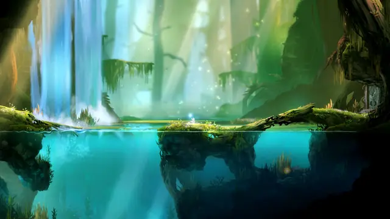
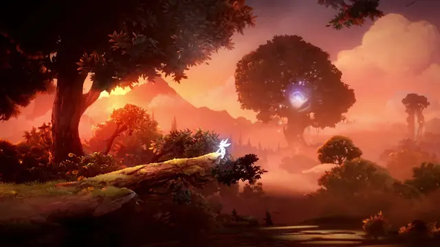
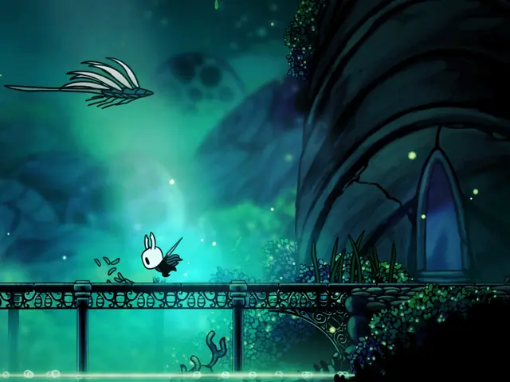
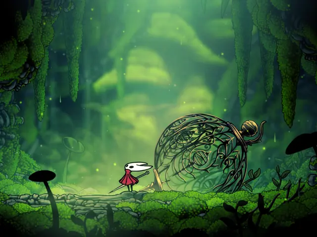
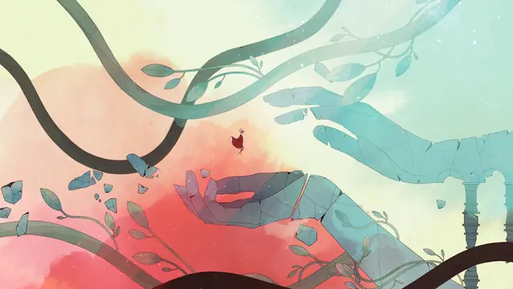
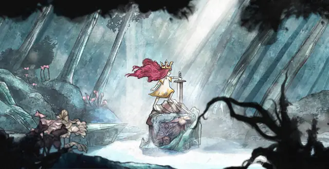
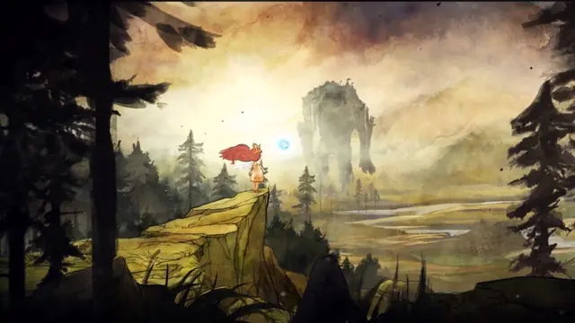
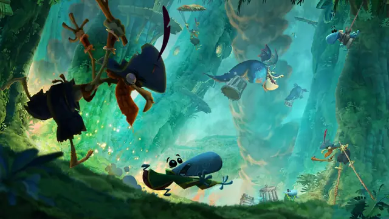
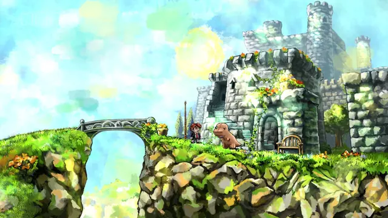
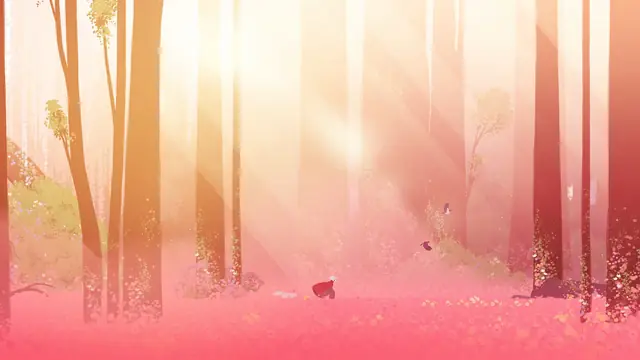
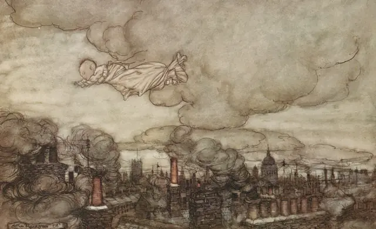
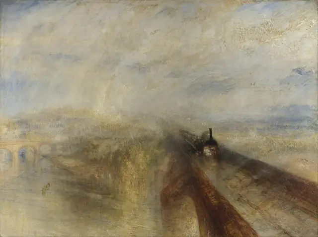
Games
- Rayman Origins
The first UbiArt game. Study how scanned art is cut into pieces and posed on bones instead of redrawn.1
- Rayman Legends
Also built on the UbiArt Framework.2 Compare its stages with Origins to see how far the same tools go.
- Child of Light
Golden Age fairy-tale illustration turned into an RPG. Study the watercolour finish behind the characters.2,6
- Ori and the Blind Forest
Study the tiny hero against huge painted trees, and how far 7,000 painted graphics go when each has its own light and colour.3
- Hollow Knight
Study how much a few simple sprite shaders and soft transparent light shapes can do.11
- Gris
Study how its colours evolve with the journey, and the scanned paper and watercolour under it all.14,10
- Ori and the Will of the Wisps
Study the hand-painted light maps and the palette that changes with each direction.4
Film, art and more
- Princess Mononoke
Ori's team took their cue from hand-drawn films like this one, and lead artist Johannes Figlhuber loved the depth of its world.3
- Nausicaä of the Valley of the Wind
With Castle in the Sky, one of the Miyazaki films that guided Child of Light's art direction.6
- Yoshitaka Amano, Fairies
Plourde's first idea for Child of Light was to use Amano's artwork directly in a game, and he really liked the atmosphere of this book's paintings.2
- Arthur Rackham
Child of Light reproduces his method digitally: an outline, blocked-in shapes, pen and ink, then washes until the tints turn translucent.6
- Moebius
One of the artists whose work Gris's creators say influenced its look.10
- Rain, Steam, and Speed
Britannica calls Turner's use of aerial perspective perhaps the boldest among Western artists.5 Study how much of the scene the air swallows.
Sources
- 1Fine Tooning
- 2Behind the scenes with stunning RPG Child of Light, out today
- 3The Art of Ori and the Blind Forest
- 4Ori And The Will Of The Wisps Interview: Art, Cut Content, And The Pressure Of Making A Sequel
- 5Aerial perspective
- 6The Fantastic Art of Child of Light
- 7The Evolutionary Process of Building Rayman Origins
- 8Q&A with Thomas Mahler Celebrating 8 Years of Ori The Game
- 9The Making of Hollow Knight
- 10Hands-on with Nomada Studio's Gris
- 11Breakthrough success with Hollow Knight
- 12Painterly
- 13GRIS: Explore a Surreal Watercolor Landscape in a New Video Game by Nomada Studio
- 14What happens when two Ubisoft vets and Spanish artist Conrad Roset Tenllado start making an indie platformer? Meet Gris
- 152D Parallax
- 16CanvasItem shaders
- 17Built-in shader functions
- 18Shading language
- 19Add a normal map or a mask map to a sprite in URP
- 20CanvasItemMaterial
- 212D Animation: Preparing and importing artwork
- 22When We Made... Hollow Knight